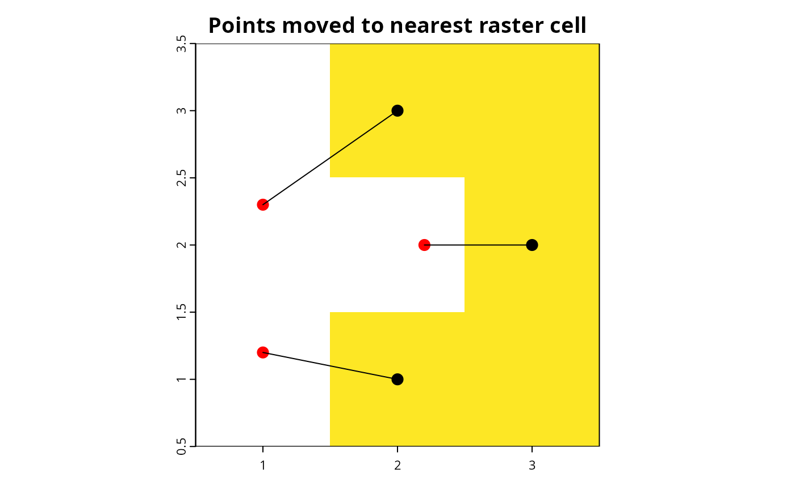
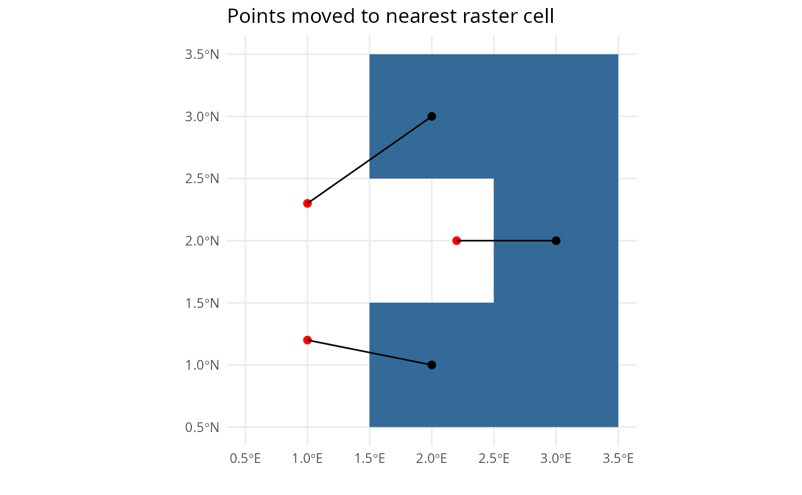
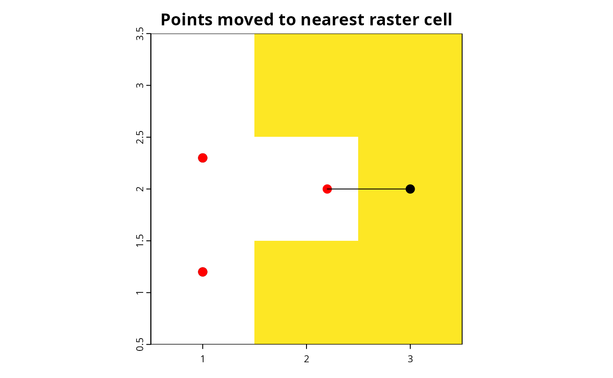

vignettes/articles/move-points-to-nearest-raster-cell.Rmd
move-points-to-nearest-raster-cell.RmdrSDM includes a handy function to move points to the
nearest raster cell with data (i.e. not NA).
Let’s generate example point coordinates:
locs <- data.frame(lon = c(1, 2, 1, 2, 2.2), lat = c(1.2, 1, 2.3, 3, 2))
locs.sf <- locs2sf(locs)
locs.sf
#> Simple feature collection with 5 features and 0 fields
#> Geometry type: POINT
#> Dimension: XY
#> Bounding box: xmin: 1 ymin: 1 xmax: 2.2 ymax: 3
#> Geodetic CRS: WGS 84
#> geometry
#> 1 POINT (1 1.2)
#> 2 POINT (2 1)
#> 3 POINT (1 2.3)
#> 4 POINT (2 3)
#> 5 POINT (2.2 2)Now let’s generate an example raster:
library(terra)
#> terra 1.8.21
ras <- rast(nrows = 2, ncols = 2, xmin = 0.5, xmax = 3.5, ymin = 0.5, ymax = 3.5,
resolution = 1, vals = c(NA, 1, 1, NA, NA, 1, NA, 1, 1))As we can see in the map below, some points fall outside raster cells with data:
occmap(locs.sf, ras, pcol = "black", psize = 3)
moved <- points2nearestcell(locs.sf, ras)
#> 3 out of 5 points have been moved.
#> X Y X_new Y_new distance moved
#> 1 1.0 1.2 2 1 113377.05 [m] TRUE
#> 2 1.0 2.3 2 3 135632.95 [m] TRUE
#> 3 2.2 2.0 3 2 88901.89 [m] TRUE
Note you can choose the format of the output map, e.g. now using ggplot (interactive leaflet maps are available too):
points2nearestcell(locs.sf, ras, map = "ggplot")
#> 3 out of 5 points have been moved.
#> X Y X_new Y_new distance moved
#> 1 1.0 1.2 2 1 113377.05 [m] TRUE
#> 2 1.0 2.3 2 3 135632.95 [m] TRUE
#> 3 2.2 2.0 3 2 88901.89 [m] TRUE
#> Simple feature collection with 5 features and 0 fields
#> Geometry type: POINT
#> Dimension: XY
#> Bounding box: xmin: 2 ymin: 1 xmax: 3 ymax: 3
#> Geodetic CRS: WGS 84
#> geometry
#> 1 POINT (2 1)
#> 2 POINT (2 1)
#> 3 POINT (2 3)
#> 4 POINT (2 3)
#> 5 POINT (3 2)The function returns a spatial object where the coordinates of the points falling outside the raster have been moved:
moved
#> Simple feature collection with 5 features and 0 fields
#> Geometry type: POINT
#> Dimension: XY
#> Bounding box: xmin: 2 ymin: 1 xmax: 3 ymax: 3
#> Geodetic CRS: WGS 84
#> geometry
#> 1 POINT (2 1)
#> 2 POINT (2 1)
#> 3 POINT (2 3)
#> 4 POINT (2 3)
#> 5 POINT (3 2)Let’s compare the original and new coordinates:
sf::st_coordinates(locs.sf)
#> X Y
#> [1,] 1.0 1.2
#> [2,] 2.0 1.0
#> [3,] 1.0 2.3
#> [4,] 2.0 3.0
#> [5,] 2.2 2.0
sf::st_coordinates(moved)
#> X Y
#> [1,] 2 1
#> [2,] 2 1
#> [3,] 2 3
#> [4,] 2 3
#> [5,] 3 2If you don’t want to change coordinates but only check which would
the nearest raster cells for each point, use
move = FALSE.
In case you want to move points only if the nearest
raster cell is within a given distance, you could use the
distance argument to set a threshold:
moved <- points2nearestcell(locs.sf, ras, distance = 100000)
#> 1 out of 5 points have been moved.
#> X Y X_new Y_new distance moved
#> 1 1.0 1.2 1 1.2 0.00 [m] FALSE
#> 2 1.0 2.3 1 2.3 0.00 [m] FALSE
#> 3 2.2 2.0 3 2.0 88901.89 [m] TRUE